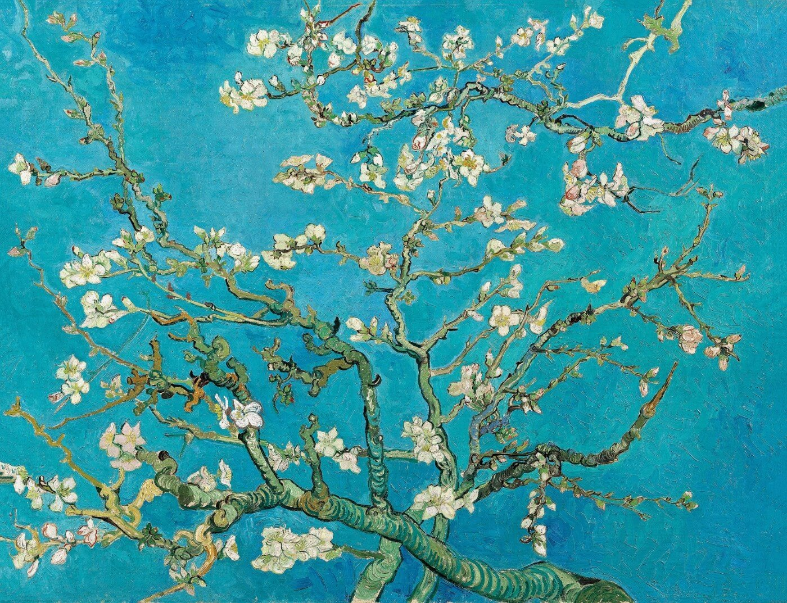
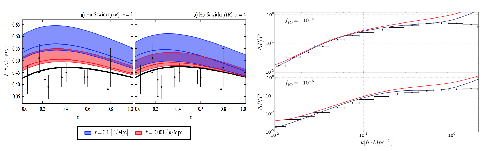
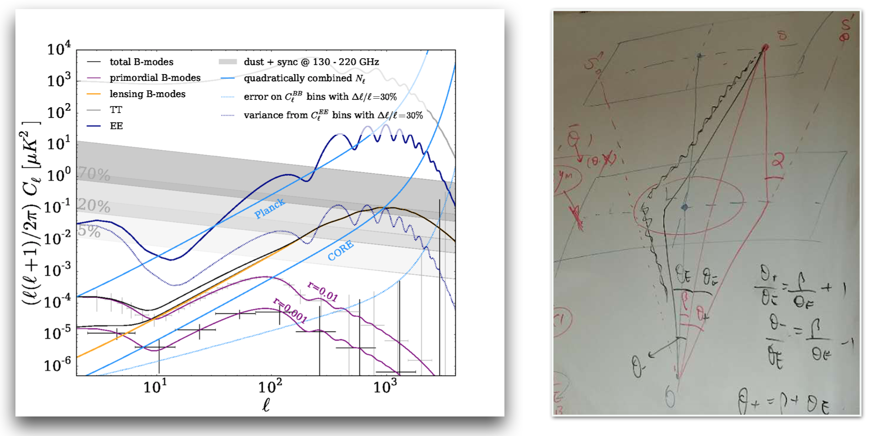
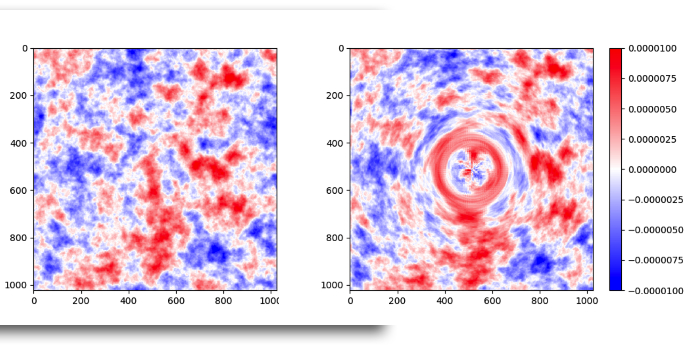
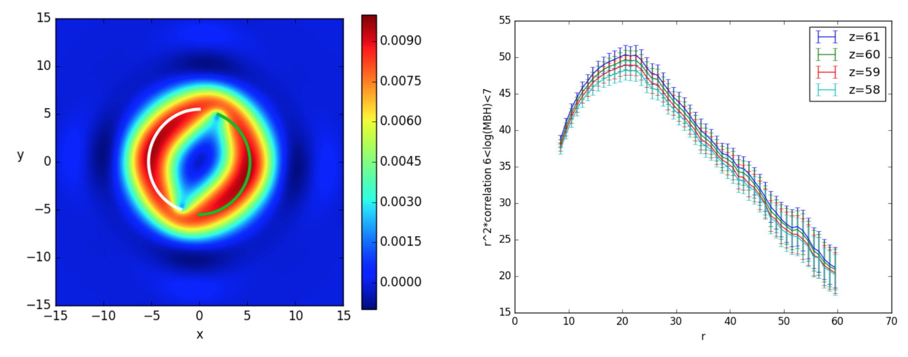
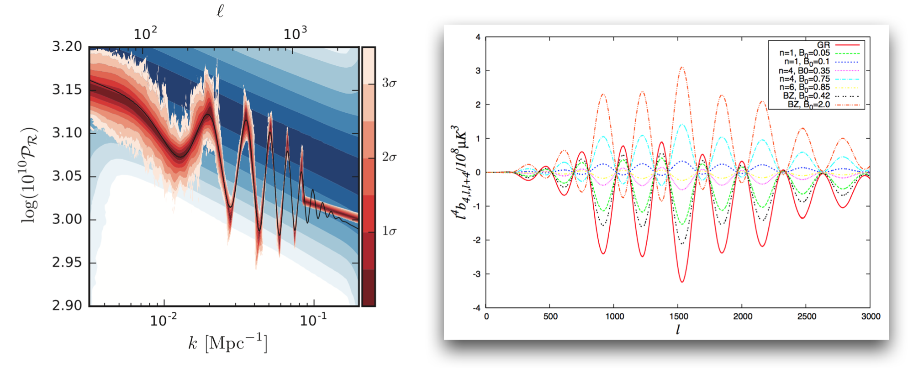
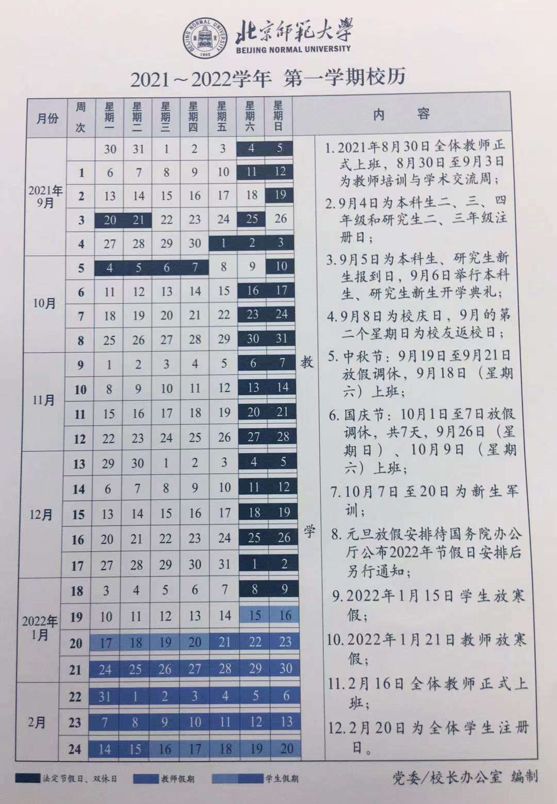
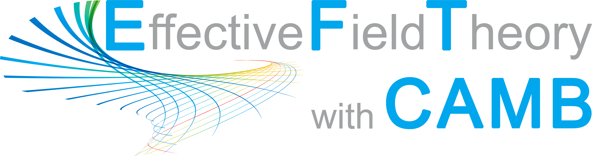
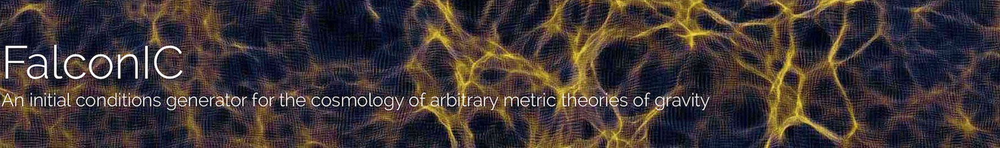

I am currently as a Full Professor at Astronomy Department, Beijing Normal University. I work on CMB physics, Large-scale Struture formation and astrophysical originated gravitational waves. In details, it covers Dark Energy/Modified Gravity, Weak Lensing, Strong Lensing, parameter estimation, non-gaussianity and higher-order statistics etc. I am memeber of the J-PAS Consortium, AliCPT project.

Prof. Dr. Bin Hu
Astronomy Department, Beijing Normal University
XinJieKou WaiDaJie, 19
100875 Beijing
bhu@bnu.edu.cn
Institute of Theoretical Physics, Chinese Academy of Sciences
Dark Energy On the linear regime of the density perturbation, we use the Effective Field Theory approach; on the mildly non-linear regime, we are interested in the extension of Lagrangian Perturbation Theory; on the extremely non-linear regime, we are interested in the N-body simulation algorithm and corresponding halo model.
Gravitational Lensing We are interested in CMB Lensing, galaxy Weak Lensing, Strong Lensing. In particular, delensing operation for the measurement of CMB B-mode polarization.
 Left are the primary CMB map; Right is the lensed CMB map by a spherical lens. [Credit: Zheng-Yi Wang]. Source code can be download from github.
Gravitational Waves We are interested in several aspects of the astrophysical sources of the gravitational wave, such as gravity test in the strong field regime; Strong lensing; galaxy-black hole co-evolution; precision cosmology w. standard sires, etc.
Besides these, we are also interested in, Higher order statistics, Cosmic inflation mechanism, etc.
Master course (Spring semester) ``Cosmic Large-scale Structure Formations''. You can find the materials HERE: lecture1, lecture2, lecture3, lecture4, lecture5, lecture6, lecture7, lecture8, lecture9.
Supplement materials: Visulaization of Cosmic density field (Open with Adobe Reader to see the animation).
Bachelor course (Autumn semester) ``Electrodyanmics B''. You can find the materials HERE: lecture1, lecture2, lecture3, lecture4, lecture5, lecture6, lecture7.
Exercise (by Cheng-Zong Ruan): Chapter 1,Chapter 2,Chapter 3,Chapter 5,Chapter 6.
Bachelor course (Autumn semester) ``天文学正在发现''. You can find the materials HERE: lecture1, lecture2, lecture3, lecture4, lecture5, lecture6, lecture7, lecture8.
Master course (summer school@UCAS 2020) ``Cosmic Microwave Background''. You can find the materials HERE: outline, basics, primordial anisotropy, secondary anisotropy, polarization, data.
科普文章： ``哈勃常数'', ``2019年诺贝尔物理学奖解读/《科学通报》'', ``CMB Lensing'', ``无中生有的暗能量/《中国国家天文》''.

Based on INSPIRE database, up to 2017/05, my publication record reaches: 40+ papers, and 2000+ citations.
 EFTCAMB is a linear Einstein-Boltzmann solver for Dark Energy/Modified Gravity models. This package has been selected by the Planck and Euclid consortium as one of the main science case. You can follow the EFTCAMB developer version via github.
 FalconIC is an initial conditions generator for the cosmology of arbitrary metric theories of gravity. The missing link between Boltzmann codes and N-body simulations. This code is developed by Wessel VALKENBURG and Bin HU.
CHAM is sCreened HAlo Model solver for the non-linear matter spectra for the altenative models to LCDM. This code is developed by Bin HU, Xue-Wen LIU and Cheng-Zong Ruan.
CMB physics
Lambda NASA; Wayne Hu's Homepage; A Poor Man’s CMB Primer; Healpy documentation;
Galaxy formation
Extragalactic; First Light by Abraham Loeb;
Large-Scale Structure formation
Current members
Xuechun Chen: Post-doc(2022). Field: Radio lensing Ye Cao: Post-doc(2022). Field: CMB/LSS Renjie Wang: PhD(2018). Field: GW Xikai Shan: PhD(2019). Field: GW Guanhua Rui: PhD(2022). Field: Strong lensing Yanru Sun: Master(2020). Field: LSS Jiakang Han: Master(2020). Field: CMB Lensing Shanhao Zhu: Master(2021). Field: Radio astronomy Zhengyi Wang: Master(2021). Field: LSS Shijie Lin: Master(2022). Field: GWEx-members Qing Yang: Post-doc(2016-2019). Field: GW. Current position: Assistant Professor at Shenzhen Technology University@China Tao Yang: Post-doc(2017-2019). Field: GW, strong lensing. Current position: Post-doc at APCTP@Korea Chengzong Ruan: Master(Co-supervised with Prof. Tongjie Zhang, 2017-2018). Field: LSS. Current position: PhD at Durham University@UK Yanling Song: Master(2018-2021). Field: LSS Jinyi Liu: Master(2019-2022). Field: CMB. Current positio: PhD at Leiden University@The Netherlands